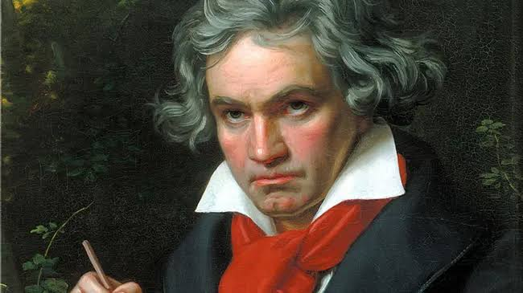
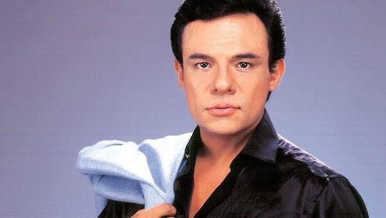
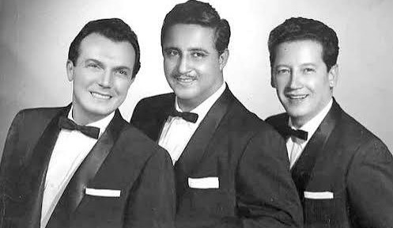

BEETHOVENCompositor alemán conocido como la "Bestia" y por sus sinfonías y su gran influencia musical.
La elegancia eterna de la música clásica

BEETHOVENCompositor alemán conocido como la "Bestia" y por sus sinfonías y su gran influencia musical.
La banda Helloween fue conocida por ser la banda pionera y creadora del power metal moderno.
Alcanzó su popularidad gracias a su estilo musical folk, inde y rock alternativo.

JOSÉ JOSÉFue conocido como El Príncipe de la Canción, fue uno de los cantantes más importantes de la música romántica en el mundo.
Su música se caracateriza por la crudeza, nostalgia, el amor, el desamor y los sentimientos.

LOS PANCHOSFueron destacados por sus armonías vocales y boleros.